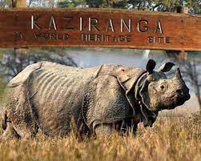

Photo by Ansilla Pais
Kaziranga National Park is one of the prides of India. Kaziranga National Park
Kaziranga is the place where the nature unwinds its pristine form in millions of hues, where wildlife roams fearlessly, where man and nature meets together. This prestigious national park of India is situated in the north eastern part of the country in the district of Golaghat and Nagoan in the state of Assam.
This prestigious national park of India is situated in the north eastern part of the country in the district of Golaghat and Nagoan in the state of Assam. Let’s go back to the beginnings of the twentieth century in the year of 1904 when this beautiful wildlife sanctuary was created, and about 68 years later it was declared as National Park.
Jeep Safari Booking